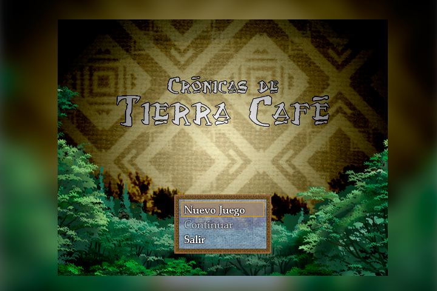
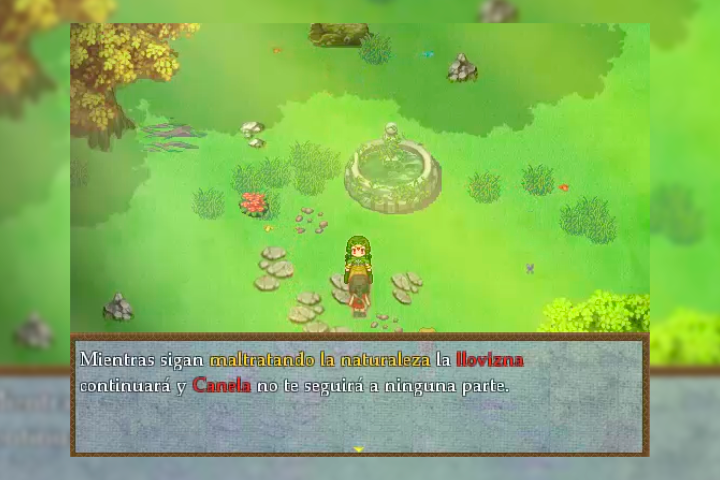
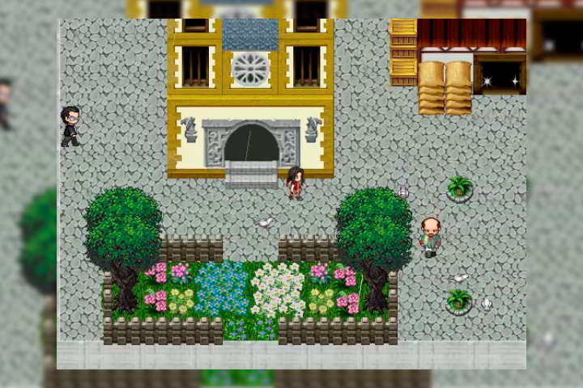
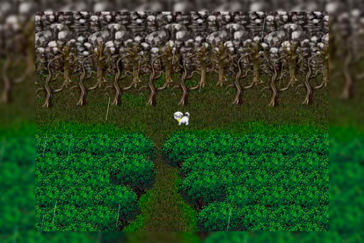

Crónicas de Tierra Café




"Crónicas de Tierra Café" es un videojuego de rol educativo, desarrollado en RPG Maker Vx Ace, con elementos visuales, narrativos y sonoros colombianos, cuyo fin es generar conciencia social a través del sentido de pertenencia en todos aquellos que lo jueguen, en especial el público joven entre los 12 y 18 años.
Para este proyecto se implementó el uso de la metodología de diseño instruccional ABP
(Aprendizaje Basado en Problemas) y herramientas de la “Taxonomía de Bloom
para la era digital” para la planeación y diseño de actividades y dar todo el soporte educativo para el proceso de ludificación.
http://ctc.co